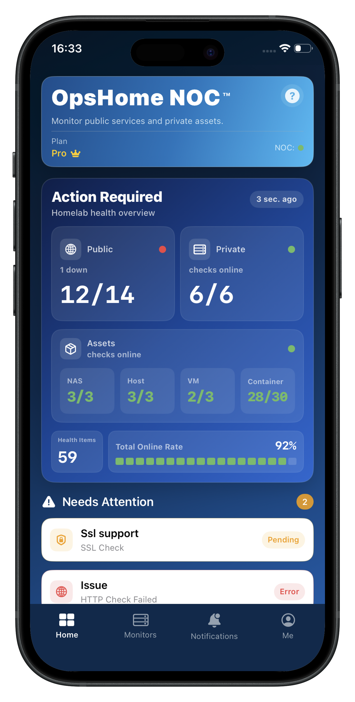

// PRODUCT PREVIEW
// FEATURES
The iPhone-first control room for your homelab.
OpsHome NOC focuses on public monitoring, private network visibility, infrastructure integrations, and clear status sharing for NAS, Docker, homelab, and small production endpoints.
// PRIVATE NETWORK
Private Monitoring
Monitor NAS panels, Docker services, and internal HTTP/HTTPS/TCP targets without opening your home network.
Infrastructure Assets
Synology NAS, Docker containers, and Proxmox VE — CPU, memory, disk I/O, temperature, and container health without exposing management interfaces.
Topology Map
A visual Cloud to Private Networks map shows where each service lives and how it is monitored.
// PUBLIC MONITORS
Monitor Workspace
All, Dock, Map, and Tags views separate public checks from private network monitoring.
Alerts & Analysis
Push alerts, Telegram, incident history, uptime blocks, SSL/domain risk, and readable analysis help you act fast.
// VISUALIZATION & SHARING
iOS Widgets
Home screen and lock screen widgets keep your homelab status visible without opening the app.
Status Pages
Share public service status with access codes, expiry windows, QR verification, and private-target masking.
// MONITOR TYPES
Monitor types and plan access.
| Type | Description | FREE | PRO |
|---|---|---|---|
| Cloud Monitoring | |||
| HTTP | HTTP status-code detection and analysis hints. | ✓ | ✓ |
| HTTPS | HTTPS reachability and status-code detection. | ✓ | ✓ |
| TCP | Custom port connectivity without fixed port restrictions. | ✓ | ✓ |
| ICMP | Ping-style host reachability. | ✓ | ✓ |
| Security & Domain | |||
| SSL | Certificate validity, CN, issuer, and hostname match checks. | ✓ | ✓ |
| DNS | DNS response checks and A/MX record validation. | — | ✓ |
| Domain | Domain registration expiry monitoring. | — | ✓ |
| UDP | UDP response checks for supported payloads. | — | ✓ |
| Private Network | |||
| Private Monitoring | Private Docker, NAS, and internal HTTP/HTTPS/TCP checks without exposing inbound access. | — | ✓ |
// APP SCREENSHOTS
Built for the way homelab people actually check status.

Dashboard

Assets

Topology Map

Proxmox VE

Widgets
// WHY OPSHOME
Built for Homelab Visibility
OpsHome NOC brings public checks, private Docker Probe assets, NAS, Proxmox, Linux hosts, containers, VMs, and resource health into one mobile-first view.
| Tool | Best For | Strengths | Homelab Trade-off | OpsHome NOC Position |
|---|---|---|---|---|
| UptimeRobot | Public uptime monitoring | Simple external checks for websites, ports, SSL, and domains. | Great for knowing if a public service is down, but it does not show what is happening behind the service inside the homelab. | Combines public checks with private asset visibility, so users can see both the public endpoint and the internal homelab status. |
| Uptime Kuma | Self-hosted uptime monitoring | Open-source, flexible, and popular among homelab users. | Still mainly focused on monitor status and status pages. Mobile-first asset visibility is not the core focus. | Provides a mobile-first view for public checks, Docker Probe assets, NAS, Proxmox, Linux, containers, and VMs. |
| Netdata | Real-time host telemetry | Detailed real-time metrics for CPU, memory, disk, network, and processes. | Very powerful, but can be dense for users who mainly want a quick homelab overview. | Focuses on lightweight, aggregated homelab visibility instead of deep per-host telemetry. |
| Prometheus / Grafana | Professional observability stacks | Powerful metrics collection, dashboards, alerting, and customization. | Requires setup, exporters, dashboards, and ongoing maintenance. | A simpler mobile-first visibility layer for homelab users who do not want to build and maintain a full monitoring stack. |
| OpsHome NOC | Mobile-first homelab observability | Public monitoring, private Docker Probe visibility, NAS, Proxmox, Linux hosts, containers, VMs, CPU, memory, storage, SSL, and domain health in one app. | Not designed to replace enterprise-grade observability platforms or deep metric systems. | The missing mobile visibility layer for homelab users. |
Different tools serve different needs. OpsHome NOC focuses on mobile-first visibility for homelab users — bringing public checks, private Docker Probe assets, NAS, Proxmox, Linux hosts, containers, VMs, and resource health into one clean view.
// PLANS
Start free. Upgrade when you need more.
Start free. No credit card required. Upgrade when you need more public monitors, private network monitoring, infrastructure integrations, and advanced visibility.
FREE
Free
No subscription required.
- 30 public monitor targets
- HTTP / HTTPS / TCP / SSL / ICMP
- 1 public status page
- 10 monitors per status page
- Fixed status page title · sharing up to 6 months
- Home screen and lock screen widgets
- Regular Free does not include Docker Probe or private monitoring
- Synology DSM public asset collection
- Public monitoring minimum interval: 10 minutes
- Push alerts · SSL expiry reminders
- Basic Analysis Reports — assets · storage · CPU / RAM
- Visual Monitoring Dashboard
Perfect for getting started
Get it FreePRO
Monthly or Yearly $2.99 / month $24.99 / year BEST VALUE
Final price is shown in the App Store before purchase.
- 100 public monitor targets
- All monitor types including UDP, DNS, Domain
- 3 public status pages
- 20 monitors per status page
- Custom status page title · permanent sharing
- Status page access code and QR verification
- Home screen and lock screen widgets
- 5 Docker Probe devices · 50 private monitor targets
- Docker Probe private polling about 1 minute
- Synology public/private collection + Proxmox infrastructure integrations
- Public monitoring minimum interval: 5 minutes
- Push + Telegram alerts · SSL/domain expiry reminders
- Full Analysis Reports — assets · storage · CPU / RAM
- Advanced Visual Monitoring Dashboard
For the serious homelab enthusiast
Get ProSpecial benefits for eligible early users
Founder is a permanent account identity granted to eligible early accounts. It extends Free and is not a third subscription plan. View the full entitlement table.
// FAQ
Frequently asked questions.
Clear answers about security, data transmission, plans, and supported infrastructure.
What is the main difference between Free and Pro?
Can I cancel my Pro subscription at any time?
Is Docker Probe difficult to install?
Is my data secure, and where is it stored?
Why is the final subscription price confirmed in the App Store?
Can I use OpsHome on multiple devices or with Family Sharing?
Is Docker Probe secure?
How is monitoring data transmitted?
Does monitoring continue when the iPhone app is closed?
Ready to see the real-time status of your entire homelab?
Securely monitor Synology, Proxmox, Docker and all your private assets from iPhone.